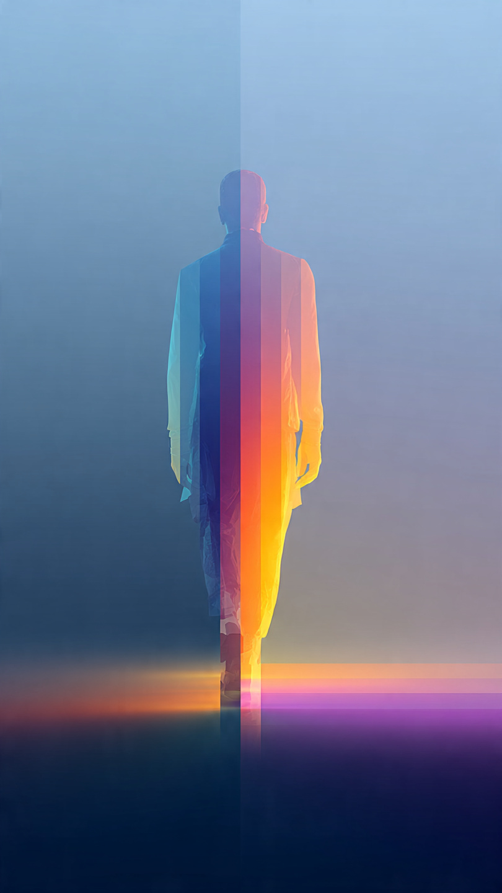

A Estrutura da Gestão Pessoal
A Hierarquia Ontológica na Sincrologia define a ordem de prioridades para uma gestão emocional saudável. Sob a inspiração Bíblica, entendemos que o formando deve equilibrar sua tridimensionalidade: Corpo, Alma e Espírito.

O desenvolvimento pessoal ocorre quando o Espírito orienta as decisões da Alma, que por sua vez governa as necessidades do Corpo. Quando essa ordem é invertida, o "Estar" entra em ruído. Esta matéria ensina a manter cada setor em seu devido lugar.